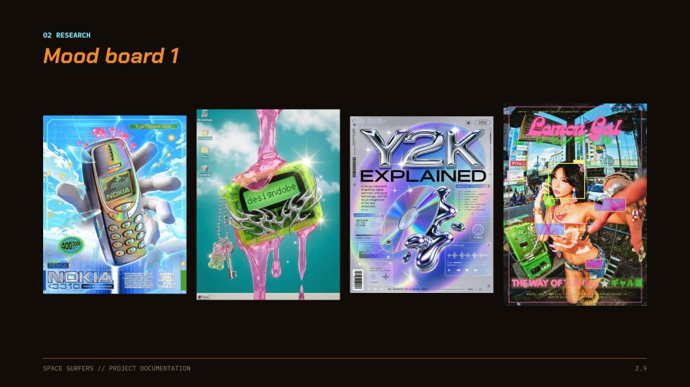
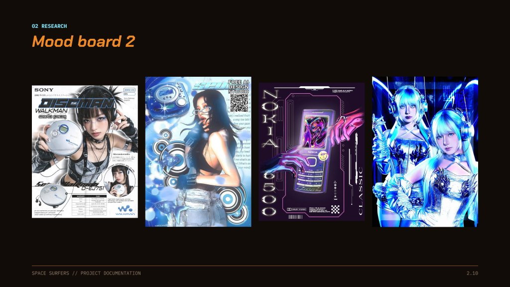

How we got here
The brief, our research, the first concept, and every change we made since, with the reason. The finished game is described on the other pages: Sound, Install, Look book and Models.
Contents: Brief · Research · Concept · How it works now · Decision log · Testing · Where it's at · Team · Process book
"What happens when hands are no longer our primary interface?" Interactive IV, Project 02, Much Ado About Music. We had four weeks to build a working interactive system where music is an input, an output or both, and which answers with visual feedback that people understand without explanation.
| The brief asks | Early concept (Oct) | Space Surfers now |
|---|---|---|
| Music is an input, an output, or both | The song builds the level (input) | Both. The song builds the trail, the city and the obstacles, and the player bends, slows and speeds up the song |
| The user's actions noticeably change the visuals, the sound or both | Score changed, the music did not | Drifting off the trail pitches, pans, muffles and slows the song. Boosts speed it up. The board, the orb and the HUD react |
| Visual feedback explains, not decorates | Board tilt, still to design | Live infrared silhouette, board tilt, the orb distance, the power meter and the "off the trail" warning |
| Understood without explanation | Surfing is a familiar metaphor | A guided calibration teaches each lean once, with a live meter |
This research answers five questions:
| Game | What it does | What we learn |
|---|---|---|
| Audiosurf | Analyses any song and builds a racetrack from it. Elevation and layout follow the music's dynamics, and blocks appear in sync. Reviewers noted blocks sometimes miss the beat, so it can feel like a random track with a song behind it (GameSpot). | The proven core of our idea. Calm sections climb slowly, intense sections drop fast. Pre-analyse the song offline and hand-tune note timing for the demo track rather than trusting live detection. |
| Tetris Effect | The soundtrack is composed in real time from the player's actions; moving and rotating pieces trigger sounds matched to the beat. | Each catch and each balance state should add or change a musical layer, quantised to the beat. |
| Rez | Effects and visuals sync with the music, so the player builds the song by playing; failing just makes the song less complex instead of discordant. | A great failure model. Falling off balance strips layers instead of playing a harsh error sound. |
| Beat Saber | Its scoring rewards broad, precise swings rather than timing; the analysis calls this instructed motion, with patterns that make players move fluidly. | Place notes so that catching them produces a pleasant body movement, like a surfer's arm sweep. |
| Synth Riders | Coloured orbs per hand plus rail-shaped hold notes; easy mode keeps the barrier low for newcomers. | Colour-code notes per hand and add rails as "surf along" notes. Offer an easy mode for the critique demo. |
| Game | What it does | What we learn |
|---|---|---|
| Child of Eden (Kinect) | Right hand guides a lock-on reticle, left hand a rapid-fire one; reviewers found hand tracking accurate. | Hands as two cursors works. One review flagged a sudden camera jump when switching hands (God is a Geek), so smooth the hand handover. |
| Adrenalin Misfits (Kinect snowboarding) | Lean to steer, twist to spin. Reviewers crashed constantly because a light lean and a hard turn were not distinguished. | The main warning for us. Lean needs a dead zone, smoothing and a response curve. |
| Dragon Rider (Uni Hamburg study) | Compared leaning with Kinect against a Wii Balance Board; Kinect was faster and rated more intuitive and fun. | Supports camera tracking over a balance board. Calibrate each player's own maximum lean angle. |
| Installation | What it does | What we learn |
|---|---|---|
| BVR_SND (TouchDesigner) | Camera tracking maps hand height to filter frequency, hand distance to sound layers, head to pulsation. | A ready mapping vocabulary. Lean could open a filter, hand spread could add a layer. |
| DJ Light (Cinimod Studio) | Visitors become guest DJs; body movement sets colours and ambient sound across the space. | Shows the turn-taking, walk-up format that suits a live critique demo. |
| Echo Temple (MPC Digital) | Body movement controls each instrument's volume, pitch or effect; a central tower holds the core mix. | Keep the core loop fixed and let the player control layers on top. That keeps it musical. |
The two things most likely to break the experience are twitchy lean controls and a camera that makes people dizzy. Both are well documented and both have known fixes.
Lean and balance controls
Comfort on a big screen
Feedback that explains
Accessibility and onboarding
| Risk | Why it matters | Fix |
|---|---|---|
| Music plays the same regardless of the player | Fails "user's actions shape what happens" | Split the song into stems (drums, bass, melody, vocals). Good balance unlocks layers; catches add melodic tones on the beat; losing balance filters the music down. |
| Visuals look the same whatever the player does | Fails "visual feedback explains, not decorates" | Every visual change ties to an input: board tilt = lean, wave colour = balance state, note bursts = catches, missing layers = dimmer space. |
| Twitchy lean control | Frustration kills the test sessions | Calibration, dead zone, smoothing (see the principles above). |
| Motion sickness on a projector | Testers stop early | Fixed board in frame, no camera yaw, sparse backdrop. |
| Tracking fails during the live 7-minute demo | Prototype grade is 25 points | Fixed lighting and plain background, tested camera position, and the required backup video. |
| Scope: full 3D game in 4 weeks | Proof of concept is due mid week 2 | Week 2 target: one lean value tilting a board on one wave, one stem muted and unmuted. Wizard of Oz the rest. |
| Off-beat notes | Audiosurf's main criticism | Pre-analyse the demo song and hand-check note positions. |


The research was written in week 1, for the first concept (Wave Rider): some fixes, like stems, hands catching notes and a space backdrop, changed later. The decision log says what and why.
It started as Wave Rider: surfing an energy wave through space to the beat of a song, with hands catching notes, health, shields and three lanes. The interaction stayed, the story and the extras changed: it became Space Surfers, a lean-only ride chasing an orb through a hanging retro futuristic city.
You stand sideways on a board in front of a Kinect v2. A tracker finds your feet, shoulders, hips and hands in the infrared image and sends your lean to the game. You pick a difficulty, each with its own song, and ride the trail that song builds. The full mapping is on Sound, the setup on Install, the look on Look book, and the models on Models.
What changed, when, and why. Newest first.
| Date | Change | Why |
|---|---|---|
| 9 Nov | One royalty-free Pixabay song per difficulty, each with its own trail and city | The demo song was not royalty free, as the brief requires |
| 9 Nov | Sound effects and menu music, on their own channel under the song | Feedback for every action, without touching the song's distortion |
| 9 Nov | A boost speeds the song up 1.5 times for 5 seconds | A small speed-up with the pitch kept was inaudible |
| 9 Nov | Every obstacle hangs from a steel frame tied into the city | Obstacles were floating in the air |
| 9 Nov | City rebuilt from stacked models, nothing floating, back rows, signs and crossings | Flat slabs, empty gaps, props hanging off roofs, and it looked monotone |
| 8 Nov | Website with a playable keyboard version in the browser | A link anyone can open; browsers can't use the Kinect |
| 8 Nov | The orb can really be caught by riding well | Before, it could never come closer than 3.5 s, so nobody could catch it |
| 8 Nov | Ride screen redrawn from the team's Figma designs, with an "off the trail" warning | The first version was off centre and hard to read |
| 8 Nov | Pick a difficulty, with the song's waveform on each card | Three cards of the same song were confusing |
| 8 Nov | Guided calibration: stand sideways first, then each lean once, with a live meter and directions said relative to the screen | Testers didn't know what to do, and leaning "forward" while standing sideways meant left or right to them |
| 8 Nov | MediaPipe body points on the infrared image | A black top returned no depth, so the tracker only saw the rider's legs |
| 8 Nov | Bigger standing zone (1.4 by 1.0 m), no "fell off" state, a 1.5 s grace before pausing | It was very hard to stay tracked on the board |
| 8 Nov | Riders 160 cm and up; calibration refused below 1.45 m | A bad calibration had recorded a rider as 22 cm tall and broke the lean |
| 8 Nov | Raise both hands for 2 s to restart | A hands-free restart for the installation |
| 8 Nov | Full game flow: idle, calibrate, pick, countdown, ride, pause, win and lose screens, power meter | From the game plan in Figma |
| 6 Nov | Obstacles built off the walls, each following one sound; tram replaces the hauler; blue trail; one orange world, yellower on Easy, redder on Hard | The project is sound based; zones and extra pickups were too much for this stage |
| 6 Nov | Shield cut; health cut earlier | The professor found health too complicated; boost is the only pickup |
| 4 Nov | Easy, Medium, Hard; lean smoothing, a curve and a small assist; forward and back swapped | Far too hard and too twitchy, exactly the failure the research warned about |
| 4 Nov | Lean measured as shoulders over hips, with a range per player | Raising an arm read as a lean, and everyone leans differently |
| 1 to 2 Nov | Kinect v2 running on a Mac, our own tracker, first ride in Godot | The official Kinect software only runs on Windows |
| 28 Oct | Godot instead of Unity | The tracking and the ride live there, with a working AI plugin |
| 12 to 23 Oct | Browser prototype: follow a song-made path by ear, 5 pitched copies of the song | To test the core idea before touching the Kinect |
Our own playtests found most of the changes in the log above: the game was too hard, the lean too twitchy, tracking lost riders in dark clothes or off the board, onboarding was too fast, and directions confused people standing sideways.
The brief asks for tests with at least two people outside the team. Who tested, what they did, what they said and what we changed goes here.
A playable prototype: full Kinect tracking, a guided calibration, three songs and difficulties, a city and obstacles built from each song, and a browser version for keyboard play.
| Who | What they did |
|---|---|
| Sven Culjak | Mood boards, 3D design and modeling |
| Dinmukhamed Beisenov | Research, the first documentation, the demo |
| Nora Miskulin | Putting the gameplay together, mapping actions to sound, project management |
The process book as a PDF, with the slides, goes up here once it is final. This link will not change.